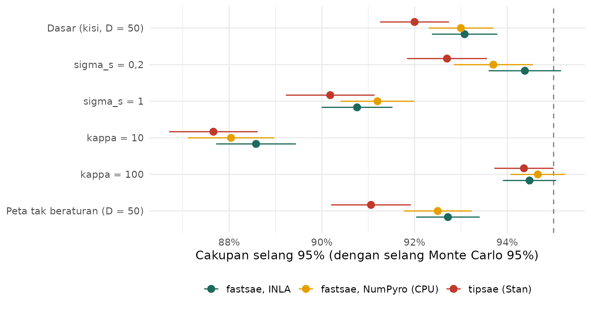
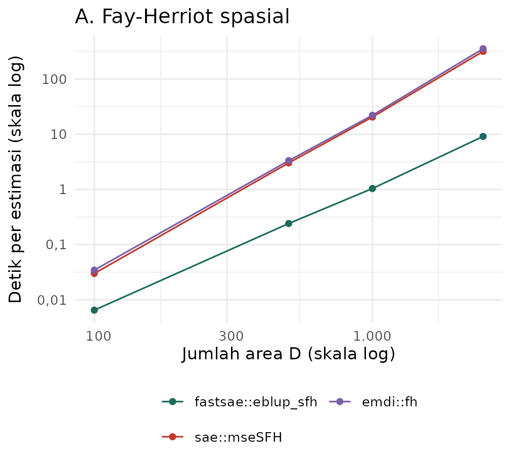
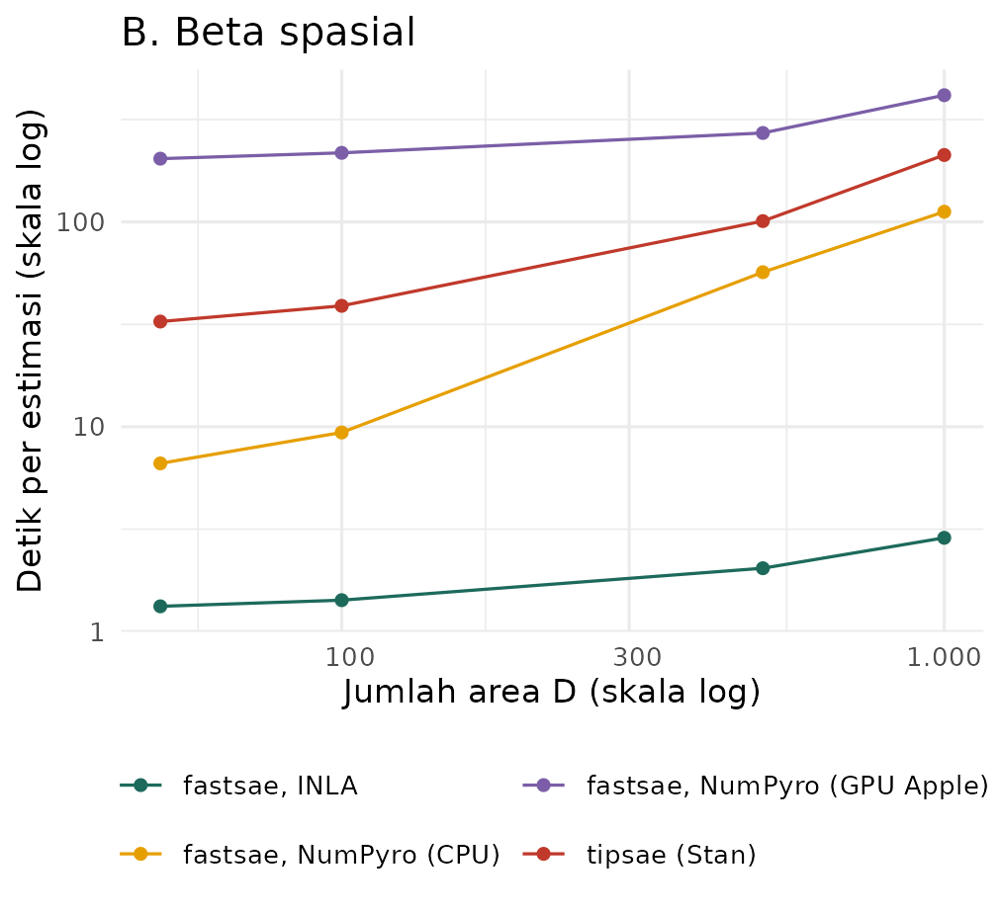

Apakah fastsae Lebih Baik? Akurasi, Kecepatan, dan Memori dibandingkan sae, emdi, dan tipsae
Source:vignettes/articles/id/fastsae-evaluation.Rmd
fastsae-evaluation.RmdArtikel ini menjawab pertanyaan apakah fastsae lebih baik daripada paket-paket yang biasa dibandingkan dengannya, untuk dua model dan dari tiga sisi: akurasi estimasi, kecepatan, dan memori. Jawabannya diberikan terpisah untuk setiap sisi. Bila fastsae tidak lebih baik, artikel ini menyatakannya.
-
A. Model Fay-Herriot spasial (efek acak SAR,
frekuentis).
fastsae::eblup_sfh()dibandingkan dengansae::mseSFH()(Molina dan Marhuenda, 2015) danemdi::fh(correlation = "spatial")(Kreutzmann dkk., 2019). -
B. Model Beta spasial (Bayesian).
fastsae::hb_area(family = "beta")dengan INLA (inla_engine(), sebuah aproksimasi; Rue dkk., 2009) dan dengan MCMC di NumPyro (jax_engine()), dibandingkan dengantipsae::fit_sae()(MCMC di Stan; De Nicolò dan Gardini, 2024).
Ringkasan
| Sisi | Fay-Herriot spasial | Beta spasial |
|---|---|---|
| Akurasi |
Sama. Ketiga paket mengestimasi model
yang sama dengan kriteria REML yang sama dan memberikan estimasi yang
sama, kecuali pada beberapa himpunan data di dekat batas
;
pada himpunan data yang berhasil diestimasi semua paket, RMSE-nya
berselisih paling banyak 4e-05. fastsae berhasil mengestimasi semua
himpunan data (0 kegagalan dari 4500); sae dan
emdi berhenti dengan galat sebanyak 45 dan 24 kali. |
Kurang lebih sama, tidak selalu lebih baik. INLA dan NumPyro sangat sejalan; tipsae sama akuratnya di sebagian besar skenario, kurang akurat bila efek spasialnya kuat (saat rantainya sering tidak konvergen), dan sedikit lebih akurat bila presisi Beta-nya rendah. Ketiganya mencapai cakupan di bawah nominal pada skenario yang paling sulit. |
| Kecepatan |
Lebih cepat. Pada
:
9,10 detik, dibandingkan 316 detik (sae) dan 354 detik
(emdi). |
INLA jauh lebih cepat (2,87 detik pada , dibandingkan 212 detik untuk tipsae). NumPyro di CPU 2 hingga 5 kali lebih cepat daripada tipsae per estimasi, dan hingga 3 kali per tarikan efektif. NumPyro di GPU Apple paling lambat pada semua ukuran yang diukur. |
| Memori | Lebih rendah atau kurang lebih sama, dengan selisih yang jauh lebih kecil daripada selisih waktunya. Pada : 745 MB, dibandingkan 886 MB dan 770 MB. | Bervariasi. Pada , tipsae memakai memori paling sedikit (69 MB, INLA 112 MB); pada , INLA yang paling sedikit (268 MB, dibandingkan 1,40 GB). NumPyro memerlukan 700–900 MB pada semua ukuran, sebagian besar untuk Python dan JAX. |
Semua hasil berasal dari satu mesin (Apple M4, 10 inti, RAM 16 GB, tanpa GPU NVIDIA); lihat Mesin dan versi.
Rancangan studi
Studi ini mengikuti struktur ADEMP dari Morris, White, dan Crowther (2019): tujuan (aims), mekanisme pembangkitan data, estimand, metode, dan ukuran kinerja.
Tujuan. Membandingkan, pada data yang nilai sebenarnya diketahui, akurasi estimasi area dan akurasi parameter model, serta mengukur waktu dan memori untuk satu kali estimasi.
Mekanisme pembangkitan data
Kedua studi berbasis model: kovariat dan varians sampling ditetapkan tetap di dalam satu skenario, sedangkan efek acak dan galat sampling ditarik ulang di setiap ulangan. Setiap skenario mengubah satu faktor dari skenario dasar. Nilai-nilai parameternya dipilih khusus untuk studi ini; bentuk modelnya mengikuti literatur yang dikutip.
A. Fay-Herriot spasial (efek acak SAR; Petrucci dan Salvati, 2006; Pratesi dan Salvati, 2008):
dengan
,
,
,
,
,
,
dan
adalah matriks persinggungan queen yang distandardisasi per
baris dari sebuah kisi teratur, atau dari 42 kabupaten pada data
mys_proxmat. Skenario dasar:
,
,
.
Skenario lainnya:
,
,
,
dan peta nyata. 500 ulangan per skenario.
B. Beta spasial (regresi Beta untuk proporsi, Ferrari dan Cribari-Neto, 2004; model Beta tingkat area, Janicki, 2020; efek acak Besag, York, dan Mollié, 1991, yang diskalakan seperti pada Riebler dkk., 2016):
dengan
sebagai medan CAR intrinsik (ICAR) pada graf ketetanggaan
queen, yang diskalakan sehingga rata-rata geometrik varians
marginalnya 1.
,
,
,
,
dengan
.
Varians sampling diestimasi dari estimasi langsung,
,
seperti yang dilakukan dalam survei. Skenario dasar: kisi
(),
,
.
Skenario lainnya:
,
,
dan peta tak beraturan (teselasi Voronoi dari 50 titik acak). Peta nyata
mys_proxmat tidak dipakai di sini: tipsae memerlukan
poligon, sedangkan mys_proxmat hanya berupa matriks.
100 ulangan per skenario.
Mengapa dan 100 ulangan untuk model Beta. Setiap estimasi MCMC (tipsae) memerlukan sekitar satu menit di bawah beban paralel, sehingga yang lebih besar atau ulangan yang lebih banyak tidak akan selesai dalam satu malam; pengukuran kecepatan dan memori dilakukan hingga . Dengan 100 ulangan untuk 50 area, galat baku Monte Carlo (MCSE) dari tingkat cakupan ditampilkan di samping setiap estimasi.
Estimand dan metode
Estimandnya adalah besaran area ( untuk model SFH, untuk model Beta) dan parameter model.
Fay-Herriot spasial. Ketiga paket memakai REML dan
MSE analitik tipe Prasad-Rao. Dalam uji pendahuluan pada satu himpunan
data, ketiganya memberikan koefisien, varians,
,
EBLUP, dan MSE yang sama hingga sekitar
.
Perbedaan fastsae yang terdokumentasi (estimasi
diperlakukan sebagai nilai tetap dalam MSE; lihat
?eblup_sfh dan NEWS.md) hanya berlaku di batas
ruang parameter. Selang 95%-nya adalah
.
Beta spasial. spatial_error = TRUE pada
tipsae menambahkan efek tak terstruktur dan efek ICAR yang terskala
(dibaca dari kode Stan-nya: reffs = v + s dengan
s = sigma_s * s_raw / scales_ICAR). Struktur yang sama di
fastsae adalah spatial = "bym" (iid + Besag terskala), yang
dipakai di sini; selebihnya dipakai pengaturan bawaan masing-masing
paket. Perbedaan yang tersisa tidak dapat dihilangkan melalui antarmuka
pengguna:
| fastsae (INLA dan NumPyro) | tipsae | |
|---|---|---|
| Inferensi | INLA: aproksimasi Laplace. NumPyro: NUTS, 2 rantai masing-masing 1.000 tarikan setelah 500 warm-up | NUTS di Stan, 4 rantai masing-masing 1.000 tarikan setelah 1.000 warm-up |
| Simpangan baku efek area | half-normal(1) untuk setiap simpangan baku | half-normal(2.5) untuk setiap simpangan baku |
| Koefisien | , intercept datar (INLA) atau hampir datar (NumPyro) | pada kovariat yang distandardisasi (tipsae menskalakannya; koefisiennya dikembalikan ke skala asal untuk artikel ini) |
| Presisi Beta | tetap per area pada , dengan dari estimasi tahap pertama (model diestimasi dua kali) | di dalam model: |
Jadi, yang dibandingkan adalah hasil yang diperoleh pengguna dari setiap paket dengan pengaturan bawaannya, bukan dua aproksimasi dari satu posterior yang sama.
Ukuran kinerja
- Per ulangan, dirata-ratakan atas area: bias, mean squared error, cakupan selang 95%, dan lebarnya. Tabel melaporkan rata-rata atas ulangan beserta MCSE-nya (simpangan baku atas ulangan dibagi ), dan RMSE sebagai akar dari rata-rata mean squared error.
- Per area, atas ulangan: RMSE relatif (hanya untuk model Beta, yang nilai sebenarnya positif).
- Parameter model: estimasi dibandingkan dengan nilai sebenarnya; untuk model SFH, juga proporsi estimasi yang berada di batas.
- MCMC: R-hat terbesar dan ukuran sampel efektif terkecil di antara parameter yang dilaporkan, serta transisi divergen (Vehtari dkk., 2021). Estimasi dengan R-hat > 1,05, ESS di bawah 100 per rantai, atau ada divergensi dihitung sebagai tidak konvergen; estimasi tersebut tetap disertakan dalam semua ukuran akurasi.
- Estimasi yang gagal dihitung. Akurasi dibandingkan pada ulangan yang semua metodenya berhasil memberikan estimasi, agar semua metode dinilai pada himpunan data yang sama.
- Waktu dan memori diukur terpisah, satu estimasi per proses R pada mesin yang sedang tidak menjalankan pekerjaan lain (lihat Kecepatan dan Memori).
Prosedur simulasi
Untuk setiap skenario :
- Tetapkan rancangannya (seed ): peta dan matriks ketetanggaannya, kovariat , serta varians sampling (SFH) atau presisi Beta . Semuanya tetap sama di seluruh ulangan dalam skenario tersebut.
-
Untuk setiap ulangan
(seed
):
- Tarik efek acaknya ( untuk model SFH; dan untuk model Beta) dan hitung besaran area yang sebenarnya, (, atau ).
- Tarik estimasi langsungnya: dengan , atau dengan varians sampling yang dihitung dari .
- Estimasi setiap metode pada himpunan data yang sama ini. Paket-paket SFH menerima yang distandardisasi per baris; untuk model Beta, fastsae menerima matriks ketetanggaan biner dan tipsae menerima poligon dari peta yang sama. Metode MCMC memakai seed .
- Simpan, per area, estimasi dan selang 95%-nya, serta, per estimasi, parameter model, diagnostik konvergensi, peringatan, dan waktunya. Estimasi yang berhenti dengan galat dicatat sebagai kegagalan beserta pesan galatnya.
- Rangkum pada ulangan yang semua metodenya berhasil memberikan estimasi: , , dan proporsi ulangan yang selangnya mencakup , ditambah rata-rata per ulangan atas area seperti dijelaskan di atas.
Selang. Untuk model SFH, dengan MSE analitik dari masing-masing paket. Untuk model Beta, selang posterior 95% berekor sama dari (kuantil posterior 2,5% dan 97,5%): dari distribusi marginal posterior INLA, dari tarikan NumPyro, dan dari ringkasan Stan pada tipsae.
Apa yang berubah antarulangan. Nilai sebenarnya berubah dari satu ulangan ke ulangan berikutnya karena efek acaknya ditarik ulang: bias, RMSE, dan cakupan merupakan rata-rata atas realisasi model untuk rancangan yang tetap. Ini adalah simulasi berbasis model; artikel populasi terhingga memperlihatkan simulasi berbasis desain, yang menarik sampel berulang kali dari satu populasi yang tetap.
Cara menjalankannya. Ulangan-ulangan dibagi menjadi tugas-tugas yang masing-masing terdiri atas satu skenario, satu metode, dan satu blok berisi 100 (SFH) atau 25 (Beta) ulangan, dan enam tugas dijalankan bersamaan. Setiap ulangan disimpan dalam berkasnya sendiri, sehingga proses yang terhenti dapat dilanjutkan dari titik terakhirnya. Waktu yang tercatat pada tahap ini diukur di bawah beban paralel tersebut dan tidak dipakai di bagian Kecepatan.
A. Fay-Herriot Spasial
Akurasi estimasi area
| Skenario | Ulangan (bersama) | RMSE (MCSE) | Cakupan (MCSE) | Lebar | Selisih RMSE maks. sae / emdi | Cakupan sae / emdi | Estimasi gagal fastsae / sae / emdi |
|---|---|---|---|---|---|---|---|
| Dasar (kisi, D = 100, rho = 0,5) | 500 | 0,724 (0,002) | 94,6% (0,1%) | 2,810 | 1,2e-07 / 1,2e-07 | 94,6% / 94,6% | 0 / 0 / 0 |
| rho = 0,2 | 499 | 0,730 (0,003) | 94,2% (0,2%) | 2,809 | 6,7e-07 / 6,7e-07 | 94,2% / 94,2% | 0 / 1 / 0 |
| rho = 0,8 | 500 | 0,735 (0,003) | 94,7% (0,1%) | 2,862 | 2,7e-12 / 2,7e-12 | 94,7% / 94,7% | 0 / 0 / 0 |
| rho = 0,95 | 487 | 0,721 (0,003) | 94,9% (0,1%) | 2,815 | 3,2e-08 / 3,2e-08 | 94,9% / 94,9% | 0 / 13 / 12 |
| psi / sigma2 = 0,5 | 500 | 0,584 (0,002) | 94,9% (0,1%) | 2,267 | 1,3e-08 / 1,3e-08 | 94,9% / 94,9% | 0 / 0 / 0 |
| psi / sigma2 = 2 | 481 | 0,868 (0,003) | 94,0% (0,2%) | 3,351 | 1,6e-05 / 1,6e-05 | 94,2% / 94,2% | 0 / 19 / 8 |
| D = 50 | 497 | 0,739 (0,004) | 94,4% (0,2%) | 2,885 | 2,1e-07 / 2,1e-07 | 94,4% / 94,4% | 0 / 3 / 2 |
| D = 500 | 500 | 0,706 (0,001) | 94,9% (0,1%) | 2,750 | 0,0e+00 / 0,0e+00 | 94,9% / 94,9% | 0 / 0 / 0 |
| Peta nyata (mys_proxmat, D = 42) | 491 | 0,744 (0,004) | 94,7% (0,2%) | 2,925 | 4,0e-05 / 4,0e-05 | 94,8% / 94,8% | 0 / 9 / 2 |
RMSE, cakupan, dan lebar di tabel adalah milik fastsae; dua kolom
lainnya menunjukkan seberapa jauh sae dan emdi
dari nilai tersebut pada himpunan data yang sama. Semua paket mencapai
cakupan yang mendekati nominal 95% di setiap skenario, dan estimasinya
sama kecuali pada beberapa himpunan data:
- Jauh dari batas
,
EBLUP dan MSE dari fastsae dan
saeberselisih paling banyak sekitar , seukuran toleransi konvergensi kedua algoritme. - Pada 20 dari 4455 himpunan data bersama, cakupannya berbeda. Pada 14
di antaranya, kedua paket memberikan estimasi yang sama,
;
fastsae lalu memperlakukan
sebagai nilai tetap dalam MSE (perbedaan yang terdokumentasi, lihat
?eblup_sfh), sehingga selangnya lebih sempit. Pada 6 sisanya, kedua paket berakhir pada estimasi yang berbeda (misalnya disaedan di fastsae): likelihood terbatas (restricted likelihood) memiliki lebih dari satu maksimum lokal di dekat batas, dan fastsae memaksimumkannya di bawah kendala , . Mana dari kedua maksimum itu yang lebih tinggi tidak diperiksa.
Estimasi yang gagal.
| fastsae | sae | emdi | |
|---|---|---|---|
| diff >= PRECISION: comparison is possible only for atomic and list types | 0 | 21 | 0 |
| sistem singular (solve() atau LAPACK dgesv) | 0 | 24 | 24 |
Sebagian besar kegagalan berasal dari penyelesaian sistem yang
singular. Sisanya adalah galat dalam pemeriksaan konvergensi perulangan
Fisher scoring di sae::eblupSFH()
(diff >= PRECISION), yang dimunculkan oleh
sae sendiri, bukan oleh kode studi ini. Kegagalan tersebut
terkonsentrasi pada skenario yang mendorong
atau
ke arah batas: varians sampling yang besar, korelasi yang kuat, jumlah
area yang sedikit, dan peta nyata. fastsae memaksimumkan likelihood
terbatas di bawah kendala
,
dan selalu berhasil memberikan estimasi.
Parameter model
| Skenario | Paket | rho sebenarnya | Rata-rata rho-hat (MCSE) | Rata-rata sigma2-hat (sebenarnya 1) | rho-hat di batas | Rata-rata beta1-hat (sebenarnya 0,8) |
|---|---|---|---|---|---|---|
| Dasar (kisi, D = 100, rho = 0,5) | fastsae | 0,50 | 0,435 (0,012) | 0,986 | 0,2% | 0,796 |
| Dasar (kisi, D = 100, rho = 0,5) | sae | 0,50 | 0,435 (0,012) | 0,986 | 0,2% | 0,796 |
| rho = 0,2 | fastsae | 0,20 | 0,123 (0,015) | 0,946 | 1,2% | 0,800 |
| rho = 0,2 | sae | 0,20 | 0,125 (0,015) | 0,947 | 1,2% | 0,800 |
| rho = 0,8 | fastsae | 0,80 | 0,762 (0,006) | 1,010 | 0,0% | 0,789 |
| rho = 0,8 | sae | 0,80 | 0,762 (0,006) | 1,010 | 0,0% | 0,789 |
| rho = 0,95 | fastsae | 0,95 | 0,925 (0,003) | 1,020 | 2,8% | 0,812 |
| rho = 0,95 | sae | 0,95 | 0,923 (0,003) | 1,029 | 0,2% | 0,812 |
| psi / sigma2 = 0,5 | fastsae | 0,50 | 0,453 (0,009) | 0,980 | 0,0% | 0,798 |
| psi / sigma2 = 0,5 | sae | 0,50 | 0,453 (0,009) | 0,980 | 0,0% | 0,798 |
| psi / sigma2 = 2 | fastsae | 0,50 | 0,381 (0,018) | 0,950 | 3,0% | 0,801 |
| psi / sigma2 = 2 | sae | 0,50 | 0,384 (0,018) | 0,978 | 2,3% | 0,802 |
| D = 50 | fastsae | 0,50 | 0,392 (0,018) | 0,950 | 1,8% | 0,800 |
| D = 50 | sae | 0,50 | 0,395 (0,017) | 0,954 | 1,6% | 0,799 |
| D = 500 | fastsae | 0,50 | 0,489 (0,004) | 0,994 | 0,0% | 0,801 |
| D = 500 | sae | 0,50 | 0,489 (0,004) | 0,994 | 0,0% | 0,801 |
| Peta nyata (mys_proxmat, D = 42) | fastsae | 0,50 | 0,386 (0,016) | 0,992 | 1,6% | 0,800 |
| Peta nyata (mys_proxmat, D = 42) | sae | 0,50 | 0,383 (0,016) | 1,008 | 1,4% | 0,799 |
emdi memberikan parameter yang sama dengan
sae sehingga tidak dicantumkan dalam tabel. REML
mengestimasi
terlalu rendah, paling kuat bila jumlah areanya sedikit atau varians
samplingnya besar, dan biasnya mengecil seiring bertambahnya
:
ini adalah sifat estimatornya, yang dimiliki ketiga paket, bukan sifat
implementasinya. Rata-rata untuk sae tidak menyertakan
estimasinya yang gagal. Pada 45 himpunan data yang gagal diestimasi
sae,
dari fastsae berada di batas pada 20 di antaranya, dan
sering kali kecil (median 0,41, padahal nilai sebenarnya 1).
B. Beta Spasial
Akurasi estimasi area
| Skenario | Metode | RMSE (MCSE) | Rata-rata RMSE relatif | Rata-rata bias absolut | Cakupan (MCSE) | Lebar |
|---|---|---|---|---|---|---|
| Dasar (kisi, D = 50) | fastsae, INLA | 0,0662 (0,0007) | 23,8% | 0,0067 | 93,1% (0,4%) | 0,246 |
| Dasar (kisi, D = 50) | fastsae, NumPyro (CPU) | 0,0667 (0,0007) | 24,0% | 0,0082 | 93,0% (0,4%) | 0,251 |
| Dasar (kisi, D = 50) | tipsae (Stan) | 0,0664 (0,0008) | 23,7% | 0,0113 | 92,0% (0,4%) | 0,257 |
| sigma_s = 0,2 | fastsae, INLA | 0,0527 (0,0007) | 19,0% | 0,0092 | 94,4% (0,4%) | 0,204 |
| sigma_s = 0,2 | fastsae, NumPyro (CPU) | 0,0531 (0,0007) | 19,2% | 0,0104 | 93,7% (0,4%) | 0,205 |
| sigma_s = 0,2 | tipsae (Stan) | 0,0530 (0,0007) | 19,1% | 0,0129 | 92,7% (0,4%) | 0,204 |
| sigma_s = 1 | fastsae, INLA | 0,0731 (0,0009) | 25,4% | 0,0065 | 90,8% (0,4%) | 0,251 |
| sigma_s = 1 | fastsae, NumPyro (CPU) | 0,0733 (0,0009) | 25,4% | 0,0073 | 91,2% (0,4%) | 0,258 |
| sigma_s = 1 | tipsae (Stan) | 0,0895 (0,0061) | 30,0% | 0,0170 | 90,2% (0,5%) | 0,284 |
| kappa = 10 | fastsae, INLA | 0,0962 (0,0012) | 34,4% | 0,0116 | 88,6% (0,4%) | 0,334 |
| kappa = 10 | fastsae, NumPyro (CPU) | 0,0980 (0,0012) | 34,9% | 0,0151 | 88,0% (0,5%) | 0,347 |
| kappa = 10 | tipsae (Stan) | 0,0916 (0,0011) | 32,6% | 0,0171 | 87,7% (0,5%) | 0,338 |
| kappa = 100 | fastsae, INLA | 0,0394 (0,0004) | 14,0% | 0,0026 | 94,5% (0,3%) | 0,147 |
| kappa = 100 | fastsae, NumPyro (CPU) | 0,0394 (0,0004) | 14,1% | 0,0027 | 94,7% (0,3%) | 0,148 |
| kappa = 100 | tipsae (Stan) | 0,0418 (0,0016) | 15,0% | 0,0049 | 94,4% (0,3%) | 0,154 |
| Peta tak beraturan (D = 50) | fastsae, INLA | 0,0671 (0,0009) | 24,6% | 0,0082 | 92,7% (0,3%) | 0,248 |
| Peta tak beraturan (D = 50) | fastsae, NumPyro (CPU) | 0,0677 (0,0009) | 24,8% | 0,0102 | 92,5% (0,4%) | 0,253 |
| Peta tak beraturan (D = 50) | tipsae (Stan) | 0,0682 (0,0009) | 25,2% | 0,0157 | 91,1% (0,4%) | 0,258 |
Sel berlatar: di setiap skenario, metode dengan RMSE terkecil dan metode yang cakupannya paling dekat dengan 95% (dicetak tebal), bersama metode lain yang selisih berpasangannya terhadap metode tersebut pada ulangan yang sama berada dalam dua galat baku Monte Carlo. Jadi, sel berlatar yang tidak dicetak tebal tidak dapat dibedakan sebagai lebih buruk. Sel tanpa latar pun masih bisa dekat dengan yang terbaik: karena semua metode diestimasi pada himpunan data yang sama, selisih pada desimal keempat RMSE dapat melebihi galat Monte Carlo-nya. Kolom-kolom lainnya tidak ditandai, karena tidak memiliki galat Monte Carlo untuk membedakan selisih yang nyata dari derau.

- INLA dan NumPyro memberikan akurasi yang hampir sama di setiap skenario: aproksimasi INLA tidak menimbulkan kerugian yang terukur di sini.
- tipsae sama akuratnya dengan fastsae di sebagian besar skenario. Bila efek spasialnya kuat (), RMSE-nya jelas lebih besar; ini juga skenario yang rantainya paling sering tidak konvergen (bagian berikutnya). Bila presisi Beta-nya rendah (), RMSE-nya sedikit lebih kecil daripada fastsae, mungkin karena tipsae memodelkan presisi di dalam model alih-alih menetapkannya dari estimasi tahap pertama; studi ini tidak dapat memisahkan hal tersebut dari pengaruh priornya.
- Selang tipsae lebih jarang mencakup nilai sebenarnya dibandingkan selang fastsae dengan INLA di setiap skenario, dengan selisih 0,1 hingga 1,7 poin persentase (selang Monte Carlo-nya tumpang tindih di beberapa skenario).
- tipsae memiliki rata-rata bias absolut estimasi area yang terbesar di setiap skenario, meskipun biasnya kecil dibandingkan RMSE untuk semua metode.
- Semua metode mencapai cakupan di bawah nominal bila presisinya rendah atau efek spasialnya kuat, dengan besaran yang mirip: dengan , hiperparameternya kurang dapat ditentukan oleh data.
Parameter model
| Skenario | Metode | beta1 (0,5) | beta2 (-0,4) | sigma_v (sebenarnya) | sigma_s (sebenarnya) |
|---|---|---|---|---|---|
| Dasar (kisi, D = 50) | fastsae, INLA | 0,543 | -0,443 | 0,332 (0,2) | 0,531 (0,5) |
| Dasar (kisi, D = 50) | fastsae, NumPyro (CPU) | 0,543 | -0,450 | 0,315 (0,2) | 0,533 (0,5) |
| Dasar (kisi, D = 50) | tipsae (Stan) | 0,545 | -0,452 | 0,294 (0,2) | 0,550 (0,5) |
| sigma_s = 0,2 | fastsae, INLA | 0,525 | -0,447 | 0,258 (0,2) | 0,206 (0,2) |
| sigma_s = 0,2 | fastsae, NumPyro (CPU) | 0,522 | -0,447 | 0,236 (0,2) | 0,210 (0,2) |
| sigma_s = 0,2 | tipsae (Stan) | 0,531 | -0,460 | 0,216 (0,2) | 0,215 (0,2) |
| sigma_s = 1 | fastsae, INLA | 0,555 | -0,381 | 0,506 (0,2) | 0,916 (1) |
| sigma_s = 1 | fastsae, NumPyro (CPU) | 0,556 | -0,386 | 0,483 (0,2) | 0,931 (1) |
| sigma_s = 1 | tipsae (Stan) | 0,570 | -0,367 | 0,485 (0,2) | 0,979 (1) |
| kappa = 10 | fastsae, INLA | 0,594 | -0,495 | 0,591 (0,2) | 0,624 (0,5) |
| kappa = 10 | fastsae, NumPyro (CPU) | 0,601 | -0,501 | 0,586 (0,2) | 0,633 (0,5) |
| kappa = 10 | tipsae (Stan) | 0,561 | -0,472 | 0,486 (0,2) | 0,606 (0,5) |
| kappa = 100 | fastsae, INLA | 0,512 | -0,404 | 0,242 (0,2) | 0,473 (0,5) |
| kappa = 100 | fastsae, NumPyro (CPU) | 0,511 | -0,404 | 0,227 (0,2) | 0,476 (0,5) |
| kappa = 100 | tipsae (Stan) | 0,523 | -0,414 | 0,232 (0,2) | 0,512 (0,5) |
| Peta tak beraturan (D = 50) | fastsae, INLA | 0,546 | -0,466 | 0,395 (0,2) | 0,491 (0,5) |
| Peta tak beraturan (D = 50) | fastsae, NumPyro (CPU) | 0,548 | -0,468 | 0,386 (0,2) | 0,499 (0,5) |
| Peta tak beraturan (D = 50) | tipsae (Stan) | 0,554 | -0,466 | 0,362 (0,2) | 0,512 (0,5) |
Angka di tabel adalah median atas ulangan dari median posterior. Ketiga metode memulihkan koefisien sama baiknya. Simpangan baku tak terstruktur diestimasi terlalu tinggi oleh ketiganya, lebih tinggi lagi bila presisinya rendah: dengan 50 area, komponen ini sulit dibedakan dari efek spasial dan dari derau sampling, sehingga posteriornya tertarik ke arah prior.
Konvergensi estimasi MCMC
| Skenario | Metode | Estimasi | R-hat > 1,05 | ESS < 100 per rantai | Ada divergensi | Tidak konvergen (salah satu) | Median ESS terkecil |
|---|---|---|---|---|---|---|---|
| Dasar (kisi, D = 50) | fastsae, NumPyro (CPU) | 100 | 2 | 57 | 26 | 67 | 187 |
| Dasar (kisi, D = 50) | tipsae (Stan) | 100 | 1 | 62 | 4 | 62 | 342 |
| sigma_s = 0,2 | fastsae, NumPyro (CPU) | 100 | 1 | 23 | 7 | 25 | 293 |
| sigma_s = 0,2 | tipsae (Stan) | 100 | 0 | 32 | 0 | 32 | 487 |
| sigma_s = 1 | fastsae, NumPyro (CPU) | 100 | 2 | 77 | 49 | 86 | 152 |
| sigma_s = 1 | tipsae (Stan) | 100 | 33 | 84 | 56 | 91 | 235 |
| kappa = 10 | fastsae, NumPyro (CPU) | 100 | 2 | 60 | 13 | 65 | 180 |
| kappa = 10 | tipsae (Stan) | 100 | 2 | 76 | 75 | 88 | 303 |
| kappa = 100 | fastsae, NumPyro (CPU) | 100 | 6 | 91 | 59 | 95 | 138 |
| kappa = 100 | tipsae (Stan) | 100 | 6 | 93 | 1 | 93 | 274 |
| Peta tak beraturan (D = 50) | fastsae, NumPyro (CPU) | 100 | 3 | 61 | 24 | 70 | 181 |
| Peta tak beraturan (D = 50) | tipsae (Stan) | 100 | 0 | 79 | 7 | 79 | 317 |
Dengan pengaturan bawaannya, tidak satu pun metode MCMC
konvergen secara andal menurut kriteria ini. Di setiap
skenario, antara seperempat hingga hampir semua estimasi memiliki ESS
yang terlalu kecil untuk sebagian parameter. Keduanya mengalami transisi
divergen pada banyak estimasi (NumPyro paling sering dengan
dan
,
tipsae dengan
dan
),
dan tipsae memiliki R-hat di atas 1,05 pada sepertiga estimasi dengan
efek spasial yang kuat. Bawaan NumPyro, yaitu 2 rantai masing-masing
1.000 tarikan, menghasilkan tarikan yang lebih sedikit daripada bawaan
tipsae, 4 rantai masing-masing 1.000 tarikan, sehingga ESS-nya lebih
rendah karena alasan itu saja. Pengaturan bawaan keduanya dimaksudkan
untuk penelusuran awal; untuk hasil yang dilaporkan, diperlukan rantai
yang lebih panjang (untuk NumPyro,
jax_engine(warmup = , samples = )) dan pemeriksaan
diagnostik. INLA tidak memiliki diagnostik semacam itu; akurasinya di
atas itulah pemeriksaannya.
Kedua nilai ESS terkecil tidak dihitung dengan cara yang sama: untuk
NumPyro, nilainya adalah ESS bulk atau tail
ternormalisasi peringkat yang terkecil di antara hiperparameter,
koefisien, dan rata-rata area (seperti yang dilaporkan fastsae); untuk
tipsae, nilainya adalah n_eff terkecil dari
rstan di antara semua parameter dalam ringkasan Stan.
Keduanya sebanding dalam besarnya, tetapi tidak persis sama.
Kecepatan
Setiap sel di bawah adalah satu proses R yang mengestimasi himpunan data yang sama beberapa kali (dua kali untuk sel yang paling lambat, tiga kali untuk sel lainnya). Estimasi pertama mencakup biaya awal (kompilasi model JAX, pemanggilan pertama Stan), dan tabel menampilkan median dari estimasi berikutnya. Proses-proses itu dijalankan satu per satu pada mesin yang sedang tidak menjalankan pekerjaan lain. Data SFH berasal dari skenario dasar pada kisi berisi sel; data Beta berasal dari skenario dasar studi akurasi.
| D | fastsae::eblup_sfh | sae::mseSFH | emdi::fh |
|---|---|---|---|
| 100 | 0,01 detik | 0,03 detik | 0,03 detik |
| 500 | 0,24 detik | 3,02 detik | 3,32 detik |
| 1.000 | 1,04 detik | 20 detik | 22 detik |
| 2.500 | 9,10 detik | 316 detik | 354 detik |
| D | fastsae, INLA | fastsae, NumPyro (CPU) | fastsae, NumPyro (GPU Apple) | tipsae (Stan) |
|---|---|---|---|---|
| 50 | 1,33 detik | 6,63 detik | 204 detik | 33 detik |
| 100 | 1,42 detik | 9,38 detik | 217 detik | 39 detik |
| 500 | 2,04 detik | 57 detik | 272 detik | 101 detik |
| 1.000 | 2,87 detik | 112 detik | 416 detik | 212 detik |


Untuk metode MCMC, waktu per estimasi bergantung pada banyaknya tarikan, sehingga waktu per tarikan efektif (waktu putaran hangat dibagi ESS terkecil estimasi tersebut) adalah perbandingan yang lebih adil:
| D | NumPyro (CPU) | NumPyro (GPU Apple) | tipsae |
|---|---|---|---|
| 50 | 0,026 detik | 0,922 detik | 0,082 detik |
| 100 | 0,053 detik | 1,431 detik | 0,134 detik |
| 500 | 2,032 detik | 9,812 detik | 2,072 detik |
| 1.000 | 3,011 detik | 14,399 detik | 6,975 detik |
- Fay-Herriot spasial: fastsae lebih cepat pada semua ukuran, dan selisihnya makin besar seiring (faktorisasi Cholesky matriks jarang alih-alih invers padat berukuran ). Dengan beberapa puluh area, ketiganya hanya memerlukan sepersekian detik, dan perbedaannya tidak berarti dalam praktik.
- Beta spasial: INLA memerlukan beberapa detik hingga . NumPyro di CPU lebih cepat daripada tipsae per estimasi, dan juga per tarikan efektif pada semua ukuran kecuali , saat keduanya kurang lebih sama. Di mesin ini, GPU Apple (Metal) lebih lambat daripada CPU pada semua ukuran yang diukur. Tidak ada GPU NVIDIA, sehingga CUDA tidak diukur.
- Pada , ESS terkecil kedua metode MCMC dengan pengaturan bawaan hanya beberapa puluh, sehingga waktu per estimasinya lebih kecil daripada waktu yang sebenarnya diperlukan untuk estimasi yang andal.
Memori
Memori sebuah estimasi adalah ukuran memori residen (resident set
size, RSS) puncak dari proses R beserta semua proses
turunannya (INLA berjalan sebagai program terpisah), yang
dicuplik setiap 0,1 detik, dikurangi puncak memori proses yang memuat
paket dan data yang sama tanpa melakukan estimasi.
mem_alloc dari bench::mark() tidak dipakai,
karena hanya menghitung memori yang dialokasikan oleh R sehingga
melewatkan INLA, Stan, dan JAX.
| D | fastsae::eblup_sfh | sae::mseSFH | emdi::fh |
|---|---|---|---|
| 100 | 38 MB | 50 MB | 50 MB |
| 500 | 80 MB | 153 MB | 141 MB |
| 1.000 | 140 MB | 284 MB | 231 MB |
| 2.500 | 745 MB | 886 MB | 770 MB |
| D | fastsae, INLA | fastsae, NumPyro (CPU) | fastsae, NumPyro (GPU Apple) | tipsae (Stan) |
|---|---|---|---|---|
| 50 | 112 MB | 907 MB | 726 MB | 69 MB |
| 100 | 123 MB | 837 MB | 676 MB | 181 MB |
| 500 | 168 MB | 781 MB | 722 MB | 932 MB |
| 1.000 | 268 MB | 854 MB | 730 MB | 1,40 GB |
-
Fay-Herriot spasial: fastsae memerlukan memori
lebih sedikit daripada
saedanemdipada dan 1.000; pada , selisihnya masih dalam rentang variasi antarproses, dan pada terbesar keunggulannya atasemdikecil. - Beta spasial: tidak ada metode yang terbaik pada semua ukuran. Memori INLA bertambah perlahan seiring ; tipsae memerlukan sedikit memori untuk kecil dan paling banyak pada ; 700–900 MB pada NumPyro sebagian besar dipakai oleh interpreter Python dan JAX, yang tetap dihitung di sini karena pengguna juga menanggungnya.
Keterbatasan metode. Puncak yang lebih singkat daripada selang pencuplikan 0,1 detik dapat terlewat. Selisih beberapa puluh MB berubah-ubah antarproses. Pada Apple silicon, GPU memakai memori yang sama (unified memory), yang tidak sepenuhnya terlihat pada RSS, sehingga angka Metal merupakan batas bawah.
Kesimpulan
-
Fay-Herriot spasial. fastsae tidak lebih akurat
daripada
saeatauemdi: paket ini mengestimasi estimator yang sama dan memberikan angka yang sama. fastsae lebih cepat (12 hingga 35 kali di sini untuk ), memakai memori lebih sedikit atau kurang lebih sama, dan berhasil memberikan estimasi untuk setiap himpunan data, sedangkansaedanemdiberhenti dengan galat pada sekitar 1% dari seluruh himpunan data (hingga 4% pada skenario tersulit). Pada beberapa himpunan data di dekat batas , estimasi atau MSE-nya berbeda darisae, sebagaimana telah didokumentasikan. - Beta spasial. fastsae dengan INLA kurang lebih sama akuratnya dengan tipsae, lebih baik bila efek spasialnya kuat dan sedikit lebih buruk bila presisi Beta-nya rendah, serta 25 hingga 75 kali lebih cepat di sini ( hingga 1.000). Untuk kecil, memorinya tidak lebih rendah daripada tipsae. Engine MCMC fastsae memberikan estimasi yang sama dengan INLA dan lebih cepat daripada tipsae, tetapi dengan pengaturan bawaan, tidak satu pun metode MCMC konvergen secara andal.
- Semua kesimpulan ini berlaku untuk skenario, pengaturan bawaan, dan mesin yang dipakai di sini. Studi akurasi memakai (SFH) dan (Beta), dan nilai-nilai parameternya dipilih khusus untuk studi ini.
Reproduksi
Dari direktori akar paket, setelah
R CMD INSTALL . --preclean (skrip-skripnya memakai fastsae
yang terpasang):
sh benchmarks/eval/run_overnight.sh # akurasi (6 proses paralel), lalu kecepatan dan memori
WORKERS=4 sh benchmarks/eval/run_overnight.sh 00:00 # sama, dimulai tengah malamSkrip-skripnya ada di benchmarks/eval/:
eval_common.R (skenario, data, dan estimasi),
sim_accuracy.R (satu tugas per skenario, metode, dan blok
ulangan, dapat dilanjutkan) dan bench_resources.R (satu
proses per sel). Proses yang mendasari halaman ini memerlukan sekitar
2,7 jam untuk studi akurasi dan 1,7 jam untuk kecepatan dan memori.
Seed-nya tetap: rancangan skenario
memakai seed
,
dan ulangan
memakai seed
.
Mesin dan versi
| Butir | Nilai |
|---|---|
| Tanggal | 2026-10-28 |
| Mesin | Apple M4, 10 inti |
| RAM | 16 GB |
| Sistem operasi | macOS Tahoe 26.6.2 |
| R | R version 4.6.1 (2026-06-24) |
| Paket | fastsae 1.0.0, sae 1.3, emdi 2.2.3, tipsae 1.0.3, INLA 26.8.7, rstan 2.32.7 |
| Python | jax 0.5.0, jaxlib 0.5.0, jax-metal 0.1.1, numpyro 0.19.0 |
| Thread | OMP_NUM_THREADS unset; INLA satu thread (hb_area); rantai tipsae dijalankan berurutan; rantai NumPyro di CPU |
| Pengaturan | jax_engine() defaults: 2 chains x 1000 draws, 500 warmup; fit_sae() defaults: 4 chains x 2000 iterations (1000 warmup), chains run one after another; inla_engine() defaults; hb_area() runs INLA single-threaded; REML, analytical MSE, fastsae n_threads = 1 |
Daftar Pustaka
- Besag, J., York, J. and Mollié, A. (1991). Bayesian image restoration, with two applications in spatial statistics. Annals of the Institute of Statistical Mathematics, 43, 1–20. doi:10.1007/BF00116466
- De Nicolò, S. and Gardini, A. (2024). The R package tipsae: Tools for mapping proportions and indicators on the unit interval. Journal of Statistical Software, 108, 1–36. doi:10.18637/jss.v108.i01
- Ferrari, S. L. P. and Cribari-Neto, F. (2004). Beta regression for modelling rates and proportions. Journal of Applied Statistics, 31, 799–815. doi:10.1080/0266476042000214501
- Janicki, R. (2020). Properties of the beta regression model for small area estimation of proportions and application to estimation of poverty rates. Communications in Statistics – Theory and Methods, 49, 2264–2284. doi:10.1080/03610926.2019.1570266
- Kreutzmann, A.-K., Pannier, S., Rojas-Perilla, N., Schmid, T., Templ, M. and Tzavidis, N. (2019). The R package emdi for estimating and mapping regionally disaggregated indicators. Journal of Statistical Software, 91, 1–33. doi:10.18637/jss.v091.i07
- Molina, I. and Marhuenda, Y. (2015). sae: An R package for small area estimation. The R Journal, 7, 81–98. doi:10.32614/RJ-2015-007
- Morris, T. P., White, I. R. and Crowther, M. J. (2019). Using simulation studies to evaluate statistical methods. Statistics in Medicine, 38, 2074–2102. doi:10.1002/sim.8086
- Petrucci, A. and Salvati, N. (2006). Small area estimation for spatial correlation in watershed erosion assessment. Journal of Agricultural, Biological, and Environmental Statistics, 11, 169–182. doi:10.1198/108571106X110531
- Pratesi, M. and Salvati, N. (2008). Small area estimation: the EBLUP estimator based on spatially correlated random area effects. Statistical Methods and Applications, 17, 113–141. doi:10.1007/s10260-007-0061-9
- Riebler, A., Sørbye, S. H., Simpson, D. and Rue, H. (2016). An intuitive Bayesian spatial model for disease mapping that accounts for scaling. Statistical Methods in Medical Research, 25, 1145–1165. doi:10.1177/0962280216660421
- Rue, H., Martino, S. and Chopin, N. (2009). Approximate Bayesian inference for latent Gaussian models by using integrated nested Laplace approximations. Journal of the Royal Statistical Society Series B, 71, 319–392. doi:10.1111/j.1467-9868.2008.00700.x
- Vehtari, A., Gelman, A., Simpson, D., Carpenter, B. and Bürkner, P.-C. (2021). Rank-normalization, folding, and localization: An improved for assessing convergence of MCMC (with discussion). Bayesian Analysis, 16, 667–718. doi:10.1214/20-BA1221